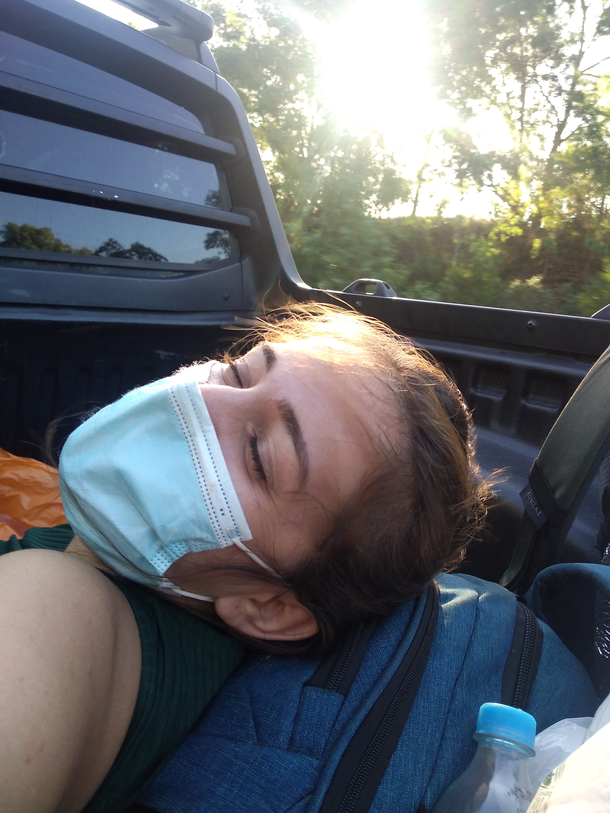

Galeria de Fotos


Ao acordarmos, almoçamos em uma churrascaria brasileira, com uma comida excelente, mas um pouco cara. Antes de atravessarmos a Aduana, aproveitamos para abastecer em um mercado do lado brasileiro. Fomos andando do centro do Chuy até a Aduana (1,7 Km), apresentamos os documentos (sinceramente, eles ignoraram os documentos da vacinação, teste PCR, seguro viagem e a declaração juramentada, apenas olharam o passaporte/identidade). Recomendamos levar todos os documentos, de qualquer forma. Após apresentarmos os documentos, seguimos para a rodovia do lado do Uruguai. Tivemos a impressão que demoraria muito para pegar a primeira carona no Uruguai, pois não sabíamos se eles tinham o costume de oferecer carona. Havia um casal de mochileiros atravessando sem a apresentação dos documentos e pararam um pouco mais a frente para pegar carona. Finalmente, em poucos minutos, um carro parou e nos concedeu uma carona.
Ruan Pablo, arquiteto, a comunicação foi bem pobre devido ao nosso primeiro contato com a língua espanhola e também pela timidez. Seu destino era ir até Santa Teresa, pois estava acampando com uns amigos. Foi ele quem nos ensinou a maneira correta de dizer: pedir carona em espanhol, traduzindo, seria algo como ‘’haciendo dedo’’. Ruan Pablo nos deixou em frente à entrada para Santa Teresa, aguardamos a próxima carona, sem a placa. Um casal apareceu oferecendo carona até Punta del Diablo e aceitamos. A princípio, nosso objetivo era ir direto para Cabo Polônio, mas tivemos uma sucessão de peripécias no decorrer do trajeto, levando para outros destinos antes de chegar no nosso objetivo principal.
Casal jovem não identificado, colocou-nos na caçamba. Parece ser muito comum as caminhonetes oferecerem carona na caçamba. Pode parecer perigoso, mas não é. Inclusive, é muito difícil a polícia abordar os carros porque não vimos nenhuma viatura na estrada (rs).
Ao chegar em Punta Del Diablo, aproveitamos o pôr do sol e a praia, posteriormente, procuramos um local para armar nossa barraca. Mas após conversarmos com um nativo, fomos informados de que era proibido o camping na praia e nos recomendou um camping pago. Andamos até um camping mais próximo (2,5 km), foi bem cansativo, pois estávamos carregando as mochilas e várias sacolas, além de não possuir aplicativo de transporte na cidade. Chegamos no camping e pagamos em torno de 30 reais por pessoa, o local é bem seguro, há tomadas, banheiro e chuveiro, um lugar para usar o fogareiro, lavar os utensílios e as roupas.